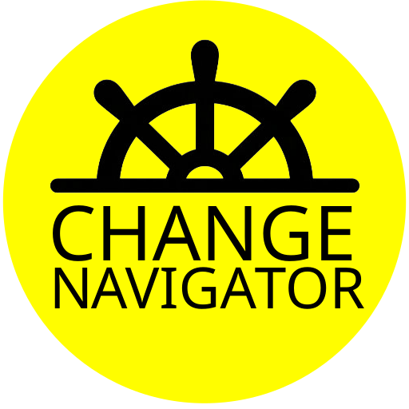

בחרו שפת קלפים
Choose your deck language
🇮🇱
עברית
Hebrew
🇺🇸
English
אנגלית
Change Navigator
הקש להפוך ↺
הקש להפוך ↺
קלף
#1
☆
שמור
שלח במייל
משוך קלף חדש
קלף יומי
כל הקלפים
מועדפים
יומן
☆
הקש להפוך ↺
הקש להפוך ↺
ההרשמות שלי
שלח קלף זה במייל
שלח קלף במייל
השראה / הרשמות
כתובת מייל
שלח עכשיו